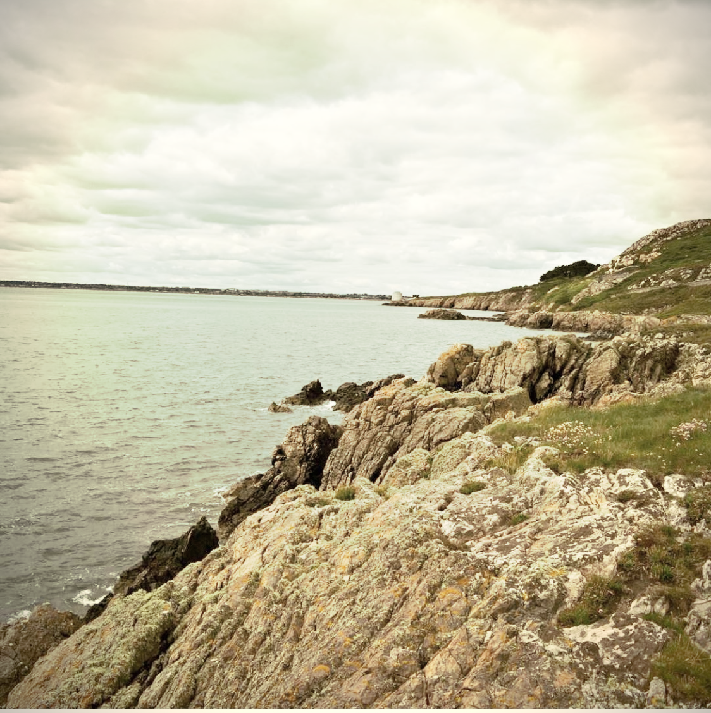

About
I am Niko Sarcevic, a cosmologist with a deep interest in mitigating the effects of astrophysical systematics, their modeling, and understanding their interplay. I am also passionate about improving coding practices in science, promoting reproducibility, ensuring accessibility of scientific analyses, and exploring the potential of combined probes in cosmology.
I obtained my undergraduate degree in Astronomy and Astrophysics from the University of Novi Sad in 2014. My thesis, titled " Research of Photoneutron Energy Spectrum by 115In Activation", focused on nuclear physics applied to nuclear medicine.
Following my undergraduate studies, I was part of the AstroMundus Master program, a two-year international course that provided opportunities to study at several universities, including the University of Innsbruck, University of Padova, and University of Göttingen. I completed my master's thesis at the University of Padova in 2017, titled " Population of Gamma-ray Sources in the Third Fermi LAT Catalog".
In September 2017, I joined the University of Freiburg in Germany to pursue a PhD as part of the XENON collaboration. My contributions included electric field simulations and R&D, where I designed the electric field cage of the XENONnT detector. Unfortunately, due to personal reasons, I had to discontinue my studies after two years.
In 2020, I joined the cosmology group at Newcastle University in the UK, where I specialized in weak lensing cosmology with a focus on systematic modeling, mitigation, and cosmological inference. My doctoral thesis, " Modelling and Mitigating the Systematics in Weak Lensing Measurements", highlights these efforts.
Currently, I am a Postdoctoral Associate at Duke University in the United States, continuing my work in cosmology. I am an active member of the LSST Dark Energy Science Collaboration (DESC) and NASA Roman Cosmology Project Infrastructure Team. Within DESC, I co-lead the updated cosmology forecast for LSST and manage all other forecasting efforts of the collaboration.